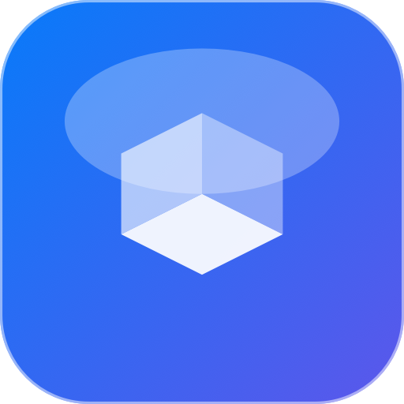
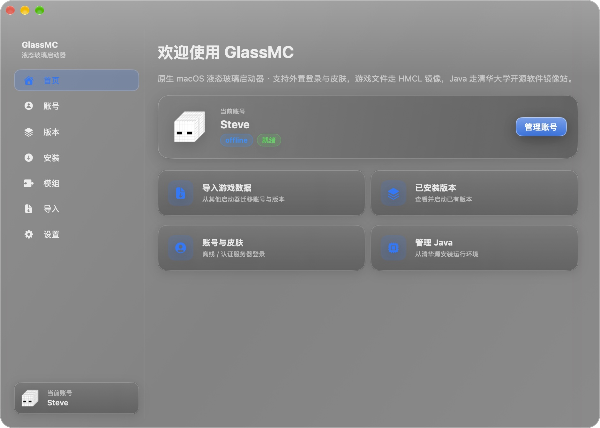
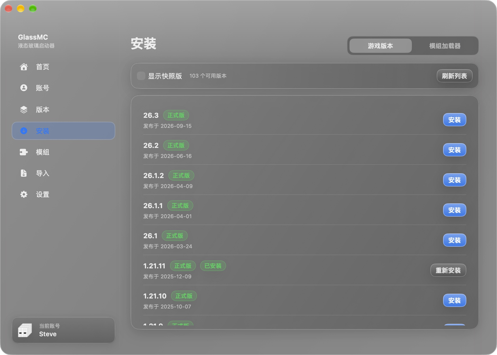
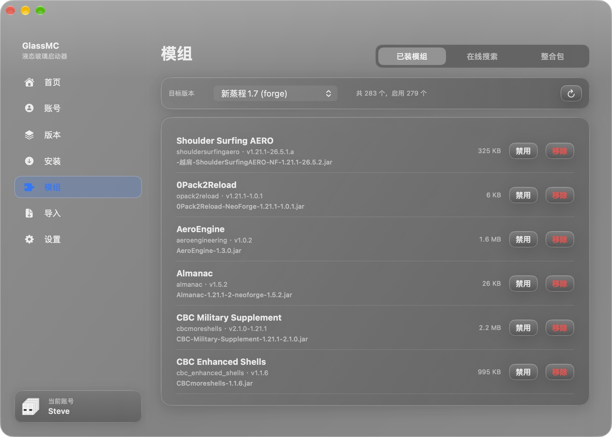
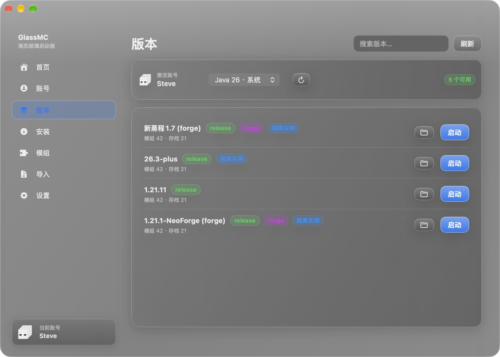

GlassMC
原生 macOS 的 Minecraft 启动器。
整块液态玻璃的界面，装版本、装模组、开游戏，一条龙。
Apple Silicon · macOS 15+ · 约 2 MB




把「装游戏」变成三次点击
不用手工拖 jar、不用改配置文件、不用为了一个模组翻十几页论坛。想玩什么版本，点一下就好。
全版本安装
正式版与快照都能装，游戏文件走国内镜像，速度稳定。装在哪个目录、用哪个 Java，它自己判断。
加载器一键装
Fabric、Quilt、NeoForge、Forge 都支持，自动匹配目标游戏版本，装完直接能加模组。
模组管理
内置 Modrinth 搜索，支持中文关键词。装、禁用、删除一键完成，缺失的前置依赖会提示。
整合包双向支持
拖进 .mrpack 就能导入别人的整合包；也能把自己调好的实例导出分享。
三种登录方式
离线账号、微软正版设备码登录、任意 Yggdrasil 认证服务器（LittleSkin、Ely.by、MiniSkins 已内置）。
皮肤同步与皮肤库
皮肤站账号的皮肤会自动带进游戏；也能在皮肤库里挑一张，立即套用到当前账号。
Java 托管
JDK 8 / 11 / 17 / 21 从清华镜像按需安装，已有的系统 JDK 也会被自动识别。
内存与进阶参数
滑块给内存；自定义 JVM 参数、窗口尺寸；还能一键导出可双击运行的启动脚本。
从别的启动器搬家
自动扫描 HMCL、官方启动器、Prism / MultiMC 的账号与版本，选一个点导入就行，不动原目录。
三步装上，两分钟开玩
- 下载并拖进「应用程序」。点页面上的下载按钮拿到
GlassMC.dmg，双击打开，把 GlassMC 图标拖到旁边的 Applications 文件夹。 - 第一次打开时放行一次。双击 GlassMC 会弹出拦截提示，点「完成」关掉，然后按下方方法一或方法二操作。
- 开始用。登录账号 → 「安装」页挑一个版本点安装 → 回「版本」页点启动。
- 双击 GlassMC，看到「无法打开，因为 Apple 无法验证此 App 是否包含恶意软件」，点 完成。
- 打开 系统设置 → 隐私与安全性，向下滚动到「安全性」区域。
- 会看到一行 "GlassMC" 已被阻止使用，因为它不是来自已识别的开发者，点旁边的 仍要打开，输入开机密码。
- 再双击一次 GlassMC，弹窗里会出现 打开 按钮，点它。以后就能正常启动了。
xattr -dr com.apple.quarantine /Applications/GlassMC.app
打开「终端」（聚焦搜索 Terminal），粘贴命令回车即可。这条命令只去掉 macOS 给下载文件打的「待检查」标记，不会修改应用内容。 如果 GlassMC 没装在「应用程序」文件夹，请把路径换成实际位置。
| 项目 | 要求 |
|---|---|
| 芯片 | Apple Silicon（M1 / M2 / M3 / M4 等）；暂不支持 Intel Mac |
| 系统 | macOS 15 Sequoia 或更新版本 |
| 磁盘 | 每个游戏版本约 500 MB ~ 1 GB（含资源文件） |
| Java | 不用自己装，启动器会按版本自动安装合适的 JDK |
现在就可以下载
GlassMC 1.0 · Apple Silicon · macOS 15+ · MIT 开源
下载后如被系统拦截，见上方「打不开怎么办」。
遇到问题先看这里
提示「GlassMC 已损坏，无法打开」怎么办？
先在终端执行上面的 xattr 命令。如果仍然报错，多半是下载文件不完整（比如被浏览器插件截断），重新下载一次完整的 dmg（约 2 MB）再试。
启动游戏时报 Java 相关的错误？
去「设置 → Java」看看有没有可用的运行时。没有就点安装，选 17 或 21（1.17 及更新版本用 17/21，1.16 及更早用 8）。如果是从别处导入的实例，也可以在启动时选择「使用实例自带的 Java」。
内存该给多少？
8 GB 内存的机器给 4 GB，16 GB 给 6~8 GB，装了大型整合包可以到 8~12 GB。别把全部内存都给游戏，否则系统本身会卡。
皮肤站登录了，但游戏里还是默认皮肤？
确认启动的实例用的是那个皮肤站账号。外置登录会在启动时自动注入 authlib-injector，日志里应该出现 Authentication server: 你的皮肤站地址；看不到的话重启一次启动器再启动游戏。
加了模组进不去游戏？
看窗口里的日志，最常见的原因是缺前置模组或版本区间不匹配。「已装模组」里会标出缺失的依赖；也可以用「禁用」按钮逐个排查。
以前 HMCL 的整合包和存档能直接用吗？
能。左侧「导入」会自动扫描 HMCL、官方启动器、Prism / MultiMC 的目录，选一个点导入，账号、版本、模组、存档都会复制过来，原目录不受影响。
支持 Intel Mac 吗？
目前只提供 Apple Silicon 版本。